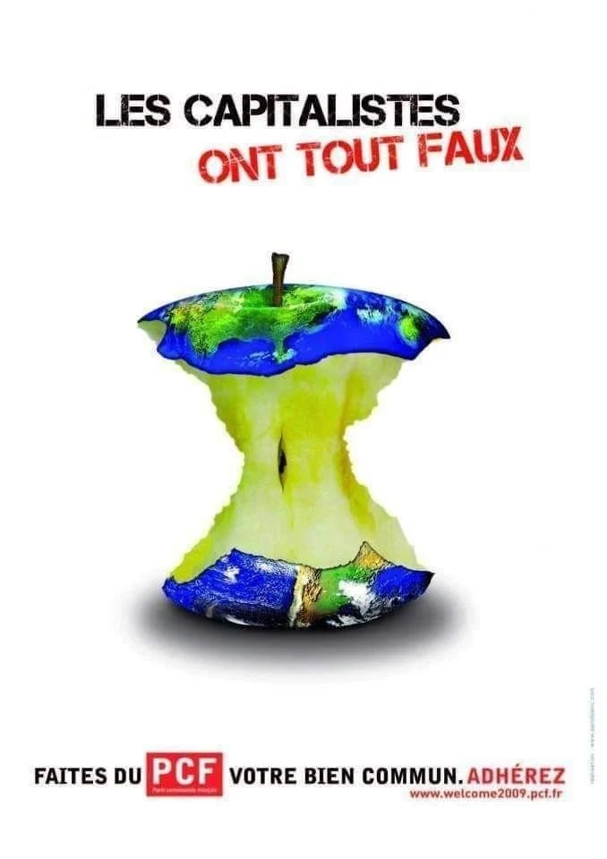

Visuel du PCF
« Les capitalistes ont tout faux » Un visuel du PCF sur les ressources
Date indiquée par Facebook · 1 août 2023
Repères éditoriaux
Nous avons relayé ce visuel du PCF en août 2023. La Terre y prend la forme d’un trognon de pomme. L’image met en cause l’épuisement des ressources et se termine par un appel à adhérer au PCF.

Sources
Archive rouge · document diffusé sur Facebook · AR-0002-FB-01605
À lire aussi · PLF : Barnier sacrifie aussi le climat ! · Le lien d’origine